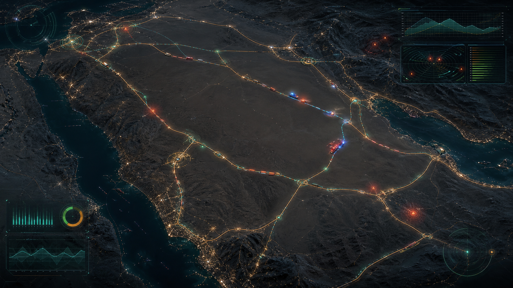

MVP تشغيلي
منظومة موحدة لتحليل البلاغات وتوقع مخاطر الطرق

البلاغات الذكية
قائمة الحالات ذات الأولوية
تحليل الحالة
تسرب حمولة خطرة على طريق سريع
تصنيف البلاغ
خطر مباشر
الجهة القائدة
الدفاع المدني
الأثر المتوقع
مرتفع على الأرواح والحركة
الإجراء المقترح
إغلاق جزئي وتوجيه فرق متخصصة
احتمالية الوقوع
حجم التأثير
حساسية الوقت
مصفوفة القرار
احتمالية × تأثير
منخفضمتوسطعالحرج
جاهزية تشغيلية
قدرة الجهات على الاستجابة الآن
دورة الحالة
من البلاغ إلى تقييم الأداء
- استقبال البلاغ أو رصد المؤشر
- التحقق من البيانات والسياق
- تصنيف البلاغ وتقييم الخطر
- احتساب أولوية الاستجابة
- توجيه الحالة ومتابعة التنفيذ
- الإغلاق وتقييم أداء الجهات